Abstract
As social media use has risen, a massive quantity of Volunteered Geographic Information has become available to the general public. In the age of big data, researchers and corporations around the world use VGI from Twitter data to conduct research in fields from marketing to geography. Wang et al. illustrate in Spatial, temporal, and content analysis of Twitter for wildfire hazards that Twitter data provides valuable information about natural hazards and their impacts. Specifically, they find that during a natural disaster, Twitter activity reflects the location and time of the disaster, as people tend to Tweet situational updates and news and local governments play a prominent role in retweet networks. Identifying spatial, network, and content trends in Twitter activity during natural disasters is useful because it can help us formulate our responses to such disasters. However, Crawford and Finn articulate a number of uncertainties and ethical dilemmas that accompany the use of Twitter data during natural disasters, which we ought to be wary of when conducting or reading about this kind of work.
In 2019, Professor Holler conducted an analysis of Twitter activity relating to Hurricane Dorian and the Sharpiegate scandal, seeking to identify differences between the Twitter storm and the actual storm. He found that despite President Trump’s statements that the storm would hit Alabama, the Twitter activity reflected the actual trajectory of the storm.
In this investigation, I conduct a replication of his work, applying a similar methodology to Twitter data collected during Hurricane Ida. The purpose of conducting any replication is to confirm the validity of one’s methodology and the generalizability of their findings. In this case in particular, I’m interested in confirming whether Twitter activity about a hurricane during that storm is consistently more prevalent where that storm makes landfall. Replicating this kind of spatial research continues to be relevant as the climate crisis intensifies and hurricanes become more and more powerful. Hurricane Ida devastated Louisiana and parts of the North East, so I anticipate finding higher levels of Twitter activity in those regions. I also extend the analysis in new directions by conducting a temporal analysis of Twitter hotspots, a temporal analysis of the sentiments of Tweets, and a network analysis of retweet activity.
For full documentation of this work, please visit these links:
Study Information
In his analysis of Twitter activity during Hurricane Dorian, Professor Holler loosely replicated the methods of Wang et al., applying similar methods to a different time, place, and disaster. Wang et al. used a Twitter API to (1) query generally for tweets containing the words “fire” and “wildfire”, and (2) query specifically for Tweets about wildfires in San Marcos and Bernardo, California. They then used the tm and igraph packages in R 3.1.2 to conduct textual and network analyses on their data. They also investigated the spatial distribution of these Tweets using a Kernal Density Estimation (KDE), but it remains unclear what computational resources they used for this last part of their analysis. They found significant clustering of Twitter activity where the wildfires were worst, discovered that the news media and local authorities were highly prevalent in retweet networks, and learned that the contents of Tweets referenced the geographic location and damage of the disaster.
In his replication, Professor Holler used a Twitter API to query for Tweets with keywords “hurricane”, “Dorian”, or “sharpiegate”. He modified Wang et al.’s methodology by using different method to analyze the spatial clustering of Tweets. Instead of using KDE, he created a Normalized Tweet Difference Index (NTDI) and tested for spatial culstering with the local Getis-Ord statistic. The NTDI is calculated as (Dorian Twitter activity - typical Twitter activity)/(Dorian Twitter activity + typical Twitter activity, and his inspiration to use this index comes from the frequent use of other similar indices such as the Normalized Vegetation Difference Index (NVDI). NTDI illustrates where Twitter activity is higher than the baseline and the local Getis-Ord statistic indicates where Twitter activity is significantly higher than other parts of the study area. Professor Holler chose not to conduct a network analysis of retweet activity, focusing exclusively on Tweet content and prevalence. The study found that despite the hysteria surrounding President Trump’s claim that the storm would pass through Alabama, the Twitter data still clustered only in the affected areas of the Atlantic coast. In his analysis, Professor Holler used R, including the rtweet, rehydratoR, igraph, sf, and spdep packages, and he provided his code for students to use in their replication studies.
Materials and Methods
Similar to Professor Holler, I conducted my replication study using R. Required packages include tidyverse, here, svDialogs, rtweet, rehydratoR, tidytext, tm, igraph, ggraph, tidycensus, sf, and spdep.
The Twitter data used in this analysis were collected using Twitter API searches conducted by other people. Professor Holler conducted several searches for Tweets relating to Hurricane Ida as the disaster unfolded. I used three of his searchers in my analysis: each search used keywords “hurricane” and “ida” and they were conducted on September 2, September 5, and September 10, 2021. My classmate, Castin Stone, queried for baseline Tweets (instead of keywords he searched for “-filter:verified OR filter:verified”) in November 2021, and I used his data as my control group. I also obtained the geometry and population data of counties in the study region from the census using the tidycensus package.
You can rehydrate any of the Twitter search results using the status ID’s linked below (the first three links are in a private repository):
- September 2 Hurricane Ida status ID’s
- September 5 Hurricane Ida status ID’s
- September 10 Hurricane Ida status ID’s
- Baseline status ID’s, November 2021
My analysis closely followed Professor Holler’s methodology. First, I combined the three Hurricane Ida search results into one table using dplyr’s union function. Then, I converted the geographic information in both the control and Hurricane Ida Twitter data to latitude and longitude coordinates, and subsetted the data to include only Tweets with sufficient geographic specificity. I used the Hurricane Ida data to create a line graph illustrating the temporal distribution of Twitter activity, and upon cleaning the text data, I created a bar graph revealing the frequency with which unique words appeared in Tweets and a word cloud displaying the most common word pairs. Upon spatially joining Tweets to counties, I mapped tweet hotspots using the local Getis-Ord statistic, I mapped the heightened Twitter activity using the NTDI, and I mapped the density of Tweets as the number of tweets per 10,000 residents.
I extended the analysis by mapping Tweet hotspots using the local Getis-Ord statistic over different time periods during the disaster, conducting a sentiment analysis of Tweets over those periods, and fixing bugs in the network analysis of retweet activity. I explain my additions to the code in the following section.
My Extensions to the Replication
To conduct my temporal analyses, I first subsetted my data into three periods of time. The storm hit Louisiana in the last days of August and the northeast in the first days of September. Thus, by subsetting my data into August 29-31, September 1-3, and September 4-10, I was able to evaluate the differences between when the storm hit Louisiana, when it hit the northeast, and the first few days after it dissipated.
I used this code to subset my data:
time1 <- tevent_rawfull %>%
filter(str_detect(created_at, "-08-29|-08-30|-08-31"))
time2 <- tevent_rawfull %>%
filter(str_detect(created_at, "-09-01|-09-02|-09-03"))
time3 <- tevent_rawfull %>%
filter(str_detect(created_at, "-09-(0[4-9]|10)"))To map the Twitter hotspots using the local Getis-Ord statistic, I followed the same methodology employed by Professor Holler. To conduct the sentiment analysis, I used some techniques that I learned in my Data Science course. First, I queried for a sentiment lexicon entitled bing.
sentiments <- get_sentiments("bing") #bing is a certain list of sentiments
sentimentsAfter cleaning the new text datasets using the same methodology as Professor Holler, I inner-joined my text datasets to the sentiment list.
# Time1
time1_wordsent <- time1_words %>%
inner_join(sentiments)
# Time2
time2_wordsent <- time2_words %>%
inner_join(sentiments)
# Time3
time3_wordsent <- time3_words %>%
inner_join(sentiments)Finally, I graphed the most common words conveying positive and negative sentiments that appear in each time period as follows:
sentiment_analysis1 = time1_wordsent %>%
group_by(word, sentiment) %>%
summarize(num = n()) %>%
filter(num > 1000) %>%
ggplot(aes(y = reorder(word, num), x = num, fill = sentiment)) +
geom_bar(stat = "identity")+
facet_wrap(~sentiment, scales = "free")+
labs(title = "Hurricane Ida Comments, August 29 - 31", x = "Frequency of Usage on Twitter", y = "Words Conveying Sentiment")
sentiment_analysis2 = time2_wordsent %>%
group_by(word, sentiment) %>%
summarize(num = n()) %>%
filter(num > 1000) %>%
ggplot(aes(y = reorder(word, num), x = num, fill = sentiment)) +
geom_bar(stat = "identity")+
facet_wrap(~sentiment, scales = "free")+
labs(title = "Hurricane Ida Comments, September 1 - 3", x = "Frequency of Usage on Twitter", y = "Words Conveying Sentiment")
sentiment_analysis3 = time3_wordsent %>%
group_by(word, sentiment) %>%
summarize(num = n()) %>%
filter(num > 500) %>%
ggplot(aes(y = reorder(word, num), x = num, fill = sentiment)) +
geom_bar(stat = "identity")+
facet_wrap(~sentiment, scales = "free")+
labs(title = "Hurricane Ida Comments, September 4 - 10", x = "Frequency of Usage on Twitter", y = "Words Conveying Sentiment")Creating a network graph is a two step process. First, one must define the network. In this case, I defined nodes to be each user and edges to be any retweet or quote of that user.
tevent_network <- tevent_rawfull %>%
network_graph("retweet,quote") %>%
simplify(remove.multiple = FALSE)
tevent_network <- delete.vertices(
tevent_network,
degree(tevent_network, mode="in") < 1
) %>%
simplify()
tevent_network <- delete.vertices(
tevent_network,
degree(tevent_network) < 10)The second step is to graph the network in a manner that is easy to understand. I adjusted the size of each node and the label of each node using the frequency with which each user was retweeted, drawing on Wang et al.’s network graph for inspiration.
png("network.png", 1500, 1500)
network <- plot.igraph(
tevent_network,
vertex.size = degree(tevent_network)*.4,
vertex.label = ifelse(
degree(tevent_network) > 5,
V(tevent_network)$name, ""),
vertex.label.cex = degree(tevent_network)*.1,
edge.arrow.mode = "->",
edge.arrow.size = 0.1
)That summarizes the new intellectual work that I contributed to this replication. If you would like to see the complete code used for this study, you can click here, and if you would like to see my entire replication repository, please click here.
Results
Replicated Figures


Extension Figures
Hotspots
Sentiment Analyses
Retweet Network
Discussion
First, I’d like to describe the ways in which my findings compare to Holler’s and Wang et al.’s results. Figure 1 reveals spikes in Twitter activity when Hurricane Ida hit land. The first major spike occurred when the hurricane hit Louisiana, and the second major spike occurred when the hurricane hit the northeast. This result is consistent with Holler’s analysis of Hurricane Dorian, in which Twitter activity spiked when the hurricane hit land and then dwindled in the following days. Figure 3 also shares striking similarities with the corresponding graph from Holler’s analysis of Hurricane Dorian. The most common word pairings in both analyses were between words that conveyed location information, descriptions about the storm, safety information, and messages about climate change. One notable difference is that the figure in our replication study includes no word pairings relating to fake news, but this makes sense given the different context of this study.
A similar distinction can be drawn between Figure 2 and the corresponding figure in the Dorian analysis. Figure 2 shows that words about the strength, location, and damage of the storm were most common in queried Tweets. The corresponding figure for Hurricane Dorian contained similar words, but it also included the words “Trump” and “realdonaldtrump” due to the Sharpiegate scandal. This figure also corroborates the findings of Wang et al.; in their analysis of wildfires, they found that the most commonly occuring words related to the effects and location of the wildfires. For both hurricanes, the NTDI maps and hotspot maps (Figure 4 and Figure 5 for the Hurricane Ida analysis) reveal a higher prevalence of Tweets in places where the storm actually struck land. Similarly, Wang et al. found a higher prevalence of Tweets about wildfires in locations near the wildfires.
Holler’s analysis of Hurricane Dorian did not include a network analysis of retweet activity, so I cannot compare my results to his. However, Wang et al. included a network analysis in their paper. They found that news outlets and authorities on the disaster were the most frequently retweeted users. By searching Twitter for the Twitter handles corresponding to the largest nodes in Figure 8, I discovered that my findings corroborate their result. The largest nodes in my network graph are @NWSNewOrleans, which is the National Weather Service in New Orleans; @NHC_Atlantic, which is the National Hurricane Center; @nelsonqatlanta, who is a journalist and former reporter for CNN; and @galeanTV, who is also a journalist.
Figure 6 is an extension from previous work, but it illustrates a pattern that make sense given what we have seen so far. Figure 6 shows that when Hurricane Ida first struck Louisiana, the only hotspot of Twitter activity was along the coast where the hurricane had struck. When the storm hit the northeast, a new hotspot emerged in the northeast and the hotspot in the south remained approximately where it was, becoming slightly more geographically specific. In the few days following the storm, hotspots remained in both the northeast and the south, but became slightly more geographically limited. One possible explanation for the decreasing geographic extent of Twitter hotspots is that the fringes of hotspot Twitter activity during the storm may not have witnessed as severe damage as the centers of the Twitter hotspots. In the aftermath of the storm, those whose belongings were destroyed in the storm may have continued Tweeting, while those who were left untouched did not.
The sentiment analysis in Figure 7 does not reveal much distinction between the sentiments expressed in each time period. In all cases, the frequency of negative words far outpaced the frequency of positive words. Certain words categorized as positive, such as “strong”, “strongest”, and “powerful” probably were descriptions of the storm and in context would not even have conveyed a positive sentiment. Different words were more prevalent during different time periods, but the prevalent words are all so similar that it is difficult to draw any conclusions from the results.
It is important to acknowledge the uncertainties inherent in our research methodology. As Crawford and Finn discuss in The limits of crisis data: Analytical and ethical challenges of using social and mobile data to understand disasters, the effects of natural disasters last for years, but studies using Twitter data reflect the impacts of just a few days. Additionally, the users of Twitter tend to be younger and urban residents, so the analysis may exaggerate the results for these demographics and underrepresent older and rural communities. Finally, Twitter’s algorithms and the presence of Twitter bots may have impacted the frequency with which users were retweeted, propogating error into my network analysis. The vast majority of users are real people, and despite demographic tendencies, the results reflect the anticipated geographic distribution of Twitter activity. However, it is important for any consumer of this research to understand that the figures and maps presented in this report are certainly subject to error.
Conclusions
Overall, this replication study corroborates the findings of Holler and Wang et al. In particular, the results reinforce the following conclusions of Holler and Wang et al.’s research, contributing to the growing body of research that the following statements are valid:
- Twitter activity is found to spike during a natural disaster and fade away in the following days.
- The most common words and word associations in natural disaster-related Tweets concern the strength, location, and damage of the event.
- The location of increased Twitter activity tends to be where the worst impacts of the disaster are felt.
- The dominant voices in retweet networks during natural disasters are news outlets and authorities on the disaster.
Furthermore, this analysis finds that hotspots of Twitter activity tend to begin when the disaster hits a region and continue for at least several days following the event. There may be a tendency for the geographic extent of hotspots to become slightly smaller in the days following the event, and future research ought to investigate the existence and causes of this phenomenon. This analysis also found that the sentiments expressed on social media during and just after a natural disaster tend to be similar. Further research might seek to corroborate this finding, potentially employing more nuanced textual analysis techniques. This replication study successfully corraborated the results of previous spatial analyses of Twitter data during natural disasters and extended the study in new directions. The replicated conclusions are fairly well-established, but the validity of my extensions ought to be validated by further research.
References:
- Crawford, K., & Finn, M. (2015). The limits of crisis data: Analytical and ethical challenges of using social and mobile data to understand disasters. GeoJournal, 80(4), 491–502. https://doi.org/10.1007/s10708-014-9597-z
- Professor Holler’s Research Compendium for his analysis of Hurricane Dorian
- Wang, Z., Ye, X., & Tsou, M.-H. (2016). Spatial, temporal, and content analysis of Twitter for wildfire hazards. Natural Hazards, 83(1), 523–540. https://doi.org/10.1007/s11069-016-2329-6